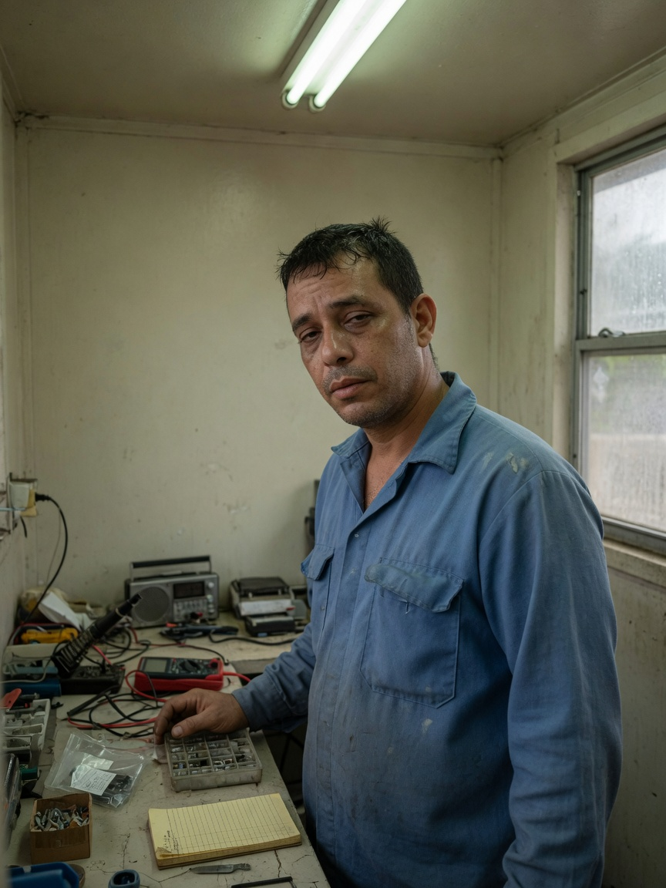
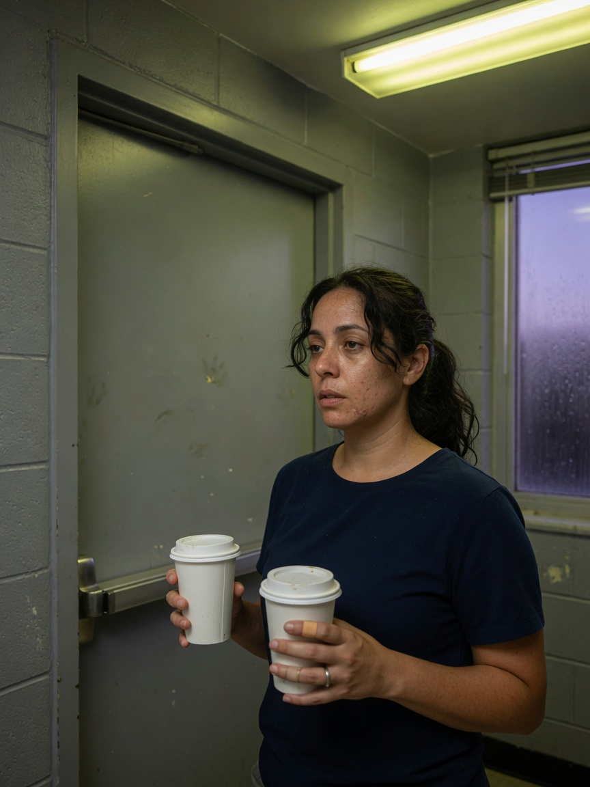
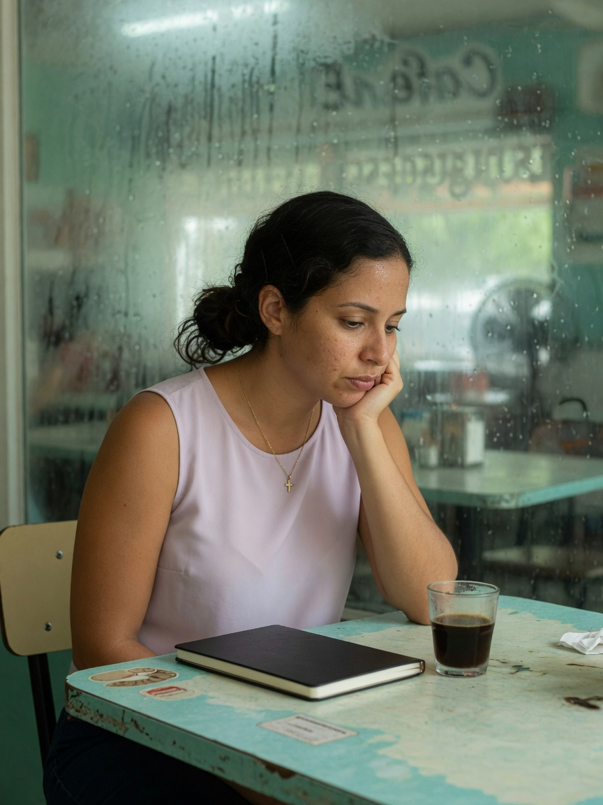

Gabriel Vélez
About 35. Solera. Electronics and radio repair. Observes first. Protective movement, not a special-forces poster. The story trusts him with a bench before it trusts him with a shot.
Afterlight · People
Spoiler-safe. Later names stay in the book until you read them.

About 35. Solera. Electronics and radio repair. Observes first. Protective movement, not a special-forces poster. The story trusts him with a bench before it trusts him with a shot.

About 31. Sister. Works with records and routing. Sharper, tired, still knows how he takes coffee. Access that looks official is still a choice.

Reporter. Method is the book’s method: what you saw, then what you think. She will not flatten occupancy into a perfect family with perfect papers.